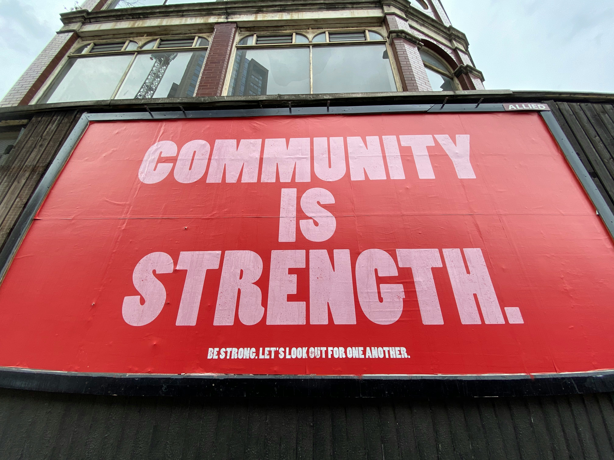

Projects

BMW Price Analysis
Exploratory data analysis examining factors influencing used BMW prices.
View Full ProjectI use data to explore social patterns, inform ethical decisions, and uncover insights that drive meaningful change.
Hello and Welcome! I’m Ashlee, a data science professional interested in using data to better understand people, systems, and social patterns. I’m especially interested in how data science can be applied in interdisciplinary contexts, including social science, policy, technology, and ethical decision-making. Outside of my work, I enjoy spending time with my family, traveling, cars, and cheering on my favorite sports teams.
Exploratory data analysis examining factors influencing used BMW prices.
View Full Project
